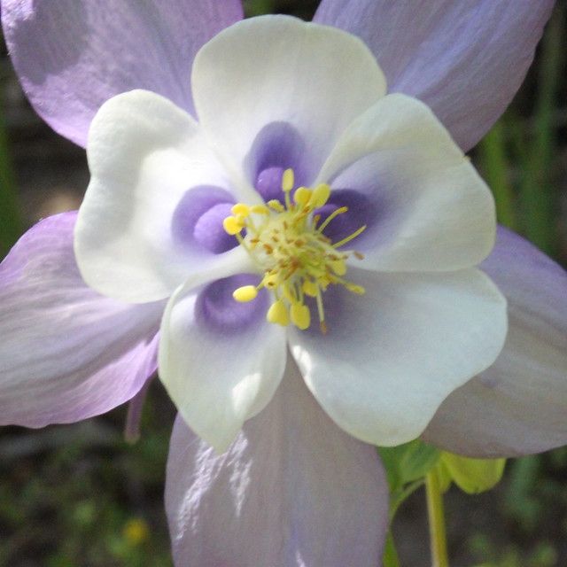
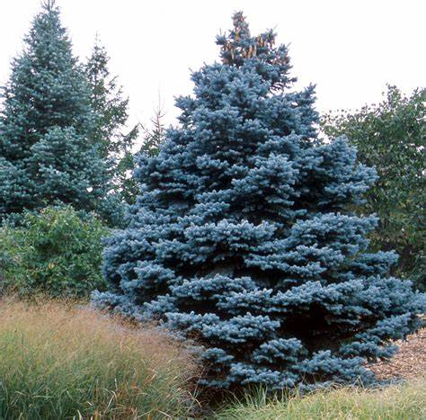

Colorado
Colorado, which joined the union as the 38th state in 1876, is America’s eighth-largest state in terms of landmass.
Located in the Rocky Mountain region of the western United States, the state’s abundant and varied natural resources
attracted the ancient Pueblo peoples and, later, the Plains Indians. First explored by Europeans in the late 1500s (the
Spanish referred to the region as “Colorado” for its red-colored earth), the area was ceded to the United States in 1848
with the Treaty of Guadalupe Hidalgo that ended the Mexican-American War (1846-48). In 1858, the discovery of gold in
Colorado attracted new settlers. During the Plains Indian Wars (1860s-80s), Colorado’s wild frontier was the scene of
intense fighting between Native Americans and white settlers. In the 21st century, Colorado continues to rely on its
natural resources as well as agriculture and tourism to sustain its economy.
| Date of Statehood |
Capital |
Population |
Size |
| August 1, 1876 |
Denver |
5.77 million |
104,185 square miles |
Motto
Nil sine Numine (“Nothing without the Deity”)
Flower
White and Lavender Columbine

Tree
Colorado Blue Spruce

Interesting facts
-
Mesa Verde National Park contains more than 4,000 archaeological sites—including around 600 cliff dwellings—from the
Ancestral Puebloans who inhabited the area from about AD 550 to 1300. By the late 13th century, they began to migrate
south to New Mexico and Arizona, where their descendants continue to live today.
-
Discovered by Lieutenant Zebulon Pike in 1806 during an expedition to determine the southwestern boundary of the
Louisiana Purchase, Pikes Peak became a landmark to the thousands of fortune hunters who traveled west with the slogan
“Pikes Peak or Bust” on their wagons after gold was found in the area in 1858.
-
On November 29, 1864, more than 150 peaceful Cheyenne and Arapaho Indians—believing themselves to be under the
protection of the U.S. government—were slaughtered by close to 700 Colorado volunteer soldiers under the command of
Colonel John Chivington. The atrocity devastated the tribes and served as a catalyst for years of subsequent warfare
between Native American Indians and the U.S. Army.
-
The Colorado Rockies are part of the North American Cordillera, which sweeps the western part of the continent all the
way from Alaska into northern Mexico. With 58 named peaks over 14,000 feet and an average altitude of 6,800 feet,
Colorado has the highest elevation of all the states.